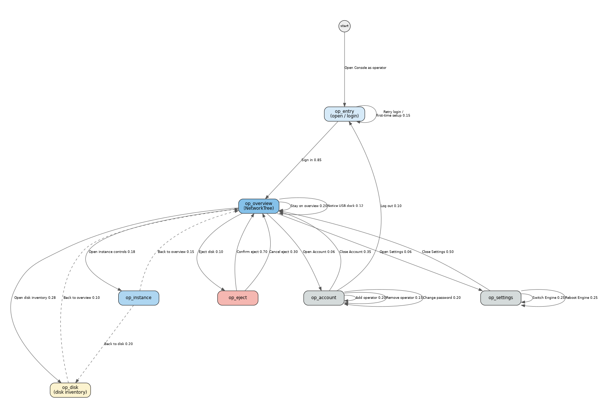
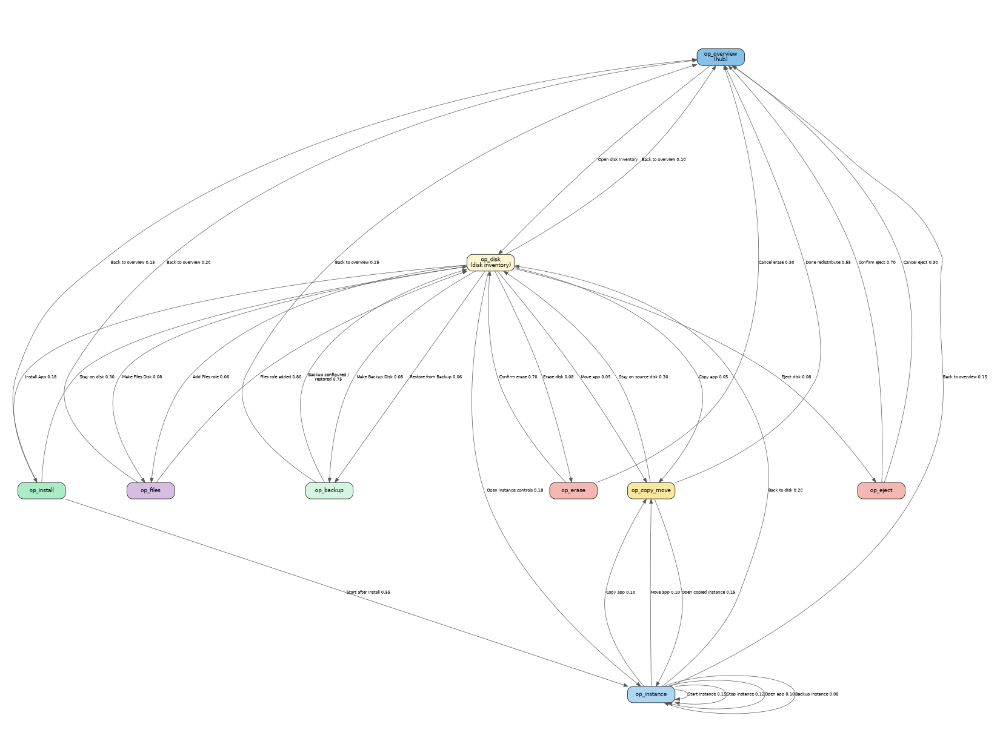

Status: Proposal draft for discussion — companion to multi-engine-classroom.md.
Revision: 2026-09-30d — Koen feedback: rename Test Scenarios → UI Interactions; entry/arrival UI only on source-state actions; state sections as H2; graph edge labels = UI Interaction names.
Author: Steve (Lead Bot), 2026-09-30 (rev. 2026-09-30d)
Audience: Koen / IDEA leads
Scope boundary: This graph is only authenticated operator manage/alter flows. Classroom learner/teacher usage (Kolibri / Nextcloud / Wikipedia) stays in the classroom doc and its Markov — do not mix the graphs.
The classroom usage Markov models people using apps. Operators also manage and alter the school’s Engines: dock/eject disks, install apps, start/stop instances, redistribute load across idea-A / idea-B / idea-C, back up, erase, and manage operator accounts.
Koen’s vision already says any Console can manage all Engines’ apps. This document inventories what the Console UI and Engine commands actually offer today, then builds a separate Markov graph so later tests can walk operator flows without bloating the classroom usage graph.
Performance is optimized by adding Appdockers and redistributing the apps over the Appdockers.
Source: agent-engine-dev/proposals/solution-description.md
Physical metaphor: dock a disk (USB) onto an Engine; Console ejects safely before unplug. Redistribution is moveApp / copyApp (and/or eject + dock elsewhere), not a separate “claim Engine” Console button.
Inventoried from local clones /workspace/agent-console-dev and /workspace/agent-engine-dev (commands, components, docs). Only these land on the graph.
| Mode | Who | Login? | UI |
|---|---|---|---|
| User | students, teachers | No | AppBrowser — open running apps |
| Operator | IT / ops | Yes | NetworkTree + disk/instance management |
Sources: agent-console-dev/README.md, docs/ARCHITECTURE.md, proposals/console-user-management.md.
| Feature | UI | Notes |
|---|---|---|
| First-time setup | FirstTimeSetup |
When userDB empty — create first admin |
| Log in | LoginForm / Account 👤 |
Username + password (bcrypt in userDB) |
| Log out | Account screen | Returns to user mode |
| Add / remove operators | OperatorManagement |
Via Account → Manage Operators |
| Change password | Account / Settings → Account | Min 8 characters |
| Feature | UI | Notes |
|---|---|---|
| Network tree | NetworkTree |
Engines + docked disks; role badges app / backup / files / empty / upgrade |
| Select Engine / disk | tree selection | Filters InstanceList / shows DiskView or EmptyDiskPanel |
| Engine discovery / connect | ConnectionManagement / Settings |
Auto-discover hostnames; manual hostname; switch connected Engine |
| Reboot Engine | NetworkTree reboot control | Sends reboot |
| Operation progress / cancel | OperationProgress |
cancelOperation |
| History / command log | HistoryPanel / CommandHistory |
Observe traces |
| Disk role | Configure / act | Commands |
|---|---|---|
| Empty | Make Files Disk; Make Backup Disk; Install App; Erase | createFilesDisk, createBackupDisk, installApp, summariseDisk/eraseDisk |
| App | Start/Stop/Open instances; Backup; Copy/Move; Add Files; Erase; Eject | startInstance, stopInstance, backupApp, copyApp, moveApp, createFilesDisk, eraseDisk, ejectDisk |
| Backup | Restore panel; (pure backup: no eject) | restoreApp; createBackupDisk already done |
| Files | Share name / availability text; eject rules | createFilesDisk (add role); mount into opted-in apps is Engine-side |
| Upgrade | Badge only in tree | Upgrade ops appear in operationDB when an Upgrade Disk is processed — no separate Console “Upgrade” button inventoried |
| System | No eject / no erase | Protected |
InstanceRow)backupAppMobileCopyMoveSheet on mobile) → copyApp / moveApp| Action | Where | Notes |
|---|---|---|
| Physical dock | USB plug into Engine | Disk appears in shared store / NetworkTree — not a Console click |
| Eject | NetworkTree / disk → EjectConfirm |
ejectDisk <diskId> — stops instances, unmounts; then operator unplugs |
| Undock (store) | Result of eject / physical removal | No separate “Undock” button beyond Eject |
| Item | Status |
|---|---|
| Claim Engine / pool claim | Not a Console feature. Fleet claim scripts are test/Ops infra (PI_FLEET.md); classroom doc already lists them out of scope. Omitted from graph. |
| Dedicated uninstall / removeApp button | No Console command helper. Removing an app’s instances is via erase disk (or stop + leave Stopped). Do not invent a remove-app state. |
| buildEngine provisioning | Engine CLI / Ops — not daily Console Markov. |
| Automatic “redistribute wizard” | Vision text only; Console redistribution = moveApp / copyApp + physical re-dock. |
Confidence: High for commands in src/store/commands.ts and panels under src/components/ listed above. Medium for Upgrade Disk operator workflow (badge + operation kinds exist; no dedicated upgrade click script). Low/N/A for claim — confirmed absent from Console.
* wildcards on the graph.multi-engine-operator-markov.dot (+ png/svg).Wiring rule: actions belong to the state where they happen. From op_overview you Open disk inventory (enter op_disk) — you do not Erase disk or Install App as edges from overview. Those fire only from op_disk (or the dedicated erase/install states they enter).
| State | Meaning |
|---|---|
op_entry |
Open Console, connect/discover, Log in or first-time setup |
op_overview |
Operator NetworkTree — idea-A/B/C, disks, status (hub) |
op_disk |
Selected disk — EmptyDiskPanel or DiskView inventory |
op_eject |
Eject confirm dialog |
op_instance |
Start / Stop / Open / on-demand Backup on an instance |
op_install |
Install App onto a disk |
op_copy_move |
Copy or Move app to another disk (possibly other Engine) |
op_files |
Make / Add Files Disk role |
op_backup |
Configure Backup Disk; Restore from Backup Disk |
op_erase |
Summarise + typed confirm erase |
op_account |
Operators list / add / remove / change password / logout |
op_settings |
Settings: Engine Connection, reboot, About |
The operator graph is shown as two diagrams so every Intent label stays readable on a letter page (same states and actions; op_overview / op_disk repeated as hubs). Combined source also kept: multi-engine-operator-markov.dot → multi-engine-operator-markov.png.
Every edge is labeled with the same Intent / UI Interaction name used in prose (plus ≈probability).
Diagram A — Auth, school hub, Account, Settings (multi-engine-operator-markov-hub.dot):

Diagram B — Disk inventory and deep actions (multi-engine-operator-markov-disk.dot):

stateDiagram-v2
[*] --> op_entry: Open Console as operator
op_entry --> op_overview: Sign in 0.85
op_entry --> op_entry: Retry login / first-time setup 0.15
op_overview --> op_disk: Open disk inventory 0.28
op_overview --> op_instance: Open instance controls 0.18
op_overview --> op_eject: Eject disk 0.10
op_overview --> op_account: Open Account 0.06
op_overview --> op_settings: Open Settings 0.06
op_overview --> op_overview: Stay on overview 0.20
op_overview --> op_overview: Notice USB dock 0.12
op_disk --> op_install: Install App 0.18
op_disk --> op_files: Make Files Disk 0.08
op_disk --> op_files: Add Files role 0.06
op_disk --> op_backup: Make Backup Disk 0.08
op_disk --> op_backup: Restore from Backup 0.06
op_disk --> op_instance: Open instance controls 0.18
op_disk --> op_copy_move: Copy app 0.05
op_disk --> op_copy_move: Move app 0.05
op_disk --> op_erase: Erase disk 0.08
op_disk --> op_eject: Eject disk 0.08
op_disk --> op_overview: Back to overview 0.10
op_eject --> op_overview: Confirm eject 0.70
op_eject --> op_overview: Cancel eject 0.30
op_erase --> op_disk: Confirm erase 0.70
op_erase --> op_overview: Cancel erase 0.30
op_files --> op_disk: Files role added 0.80
op_files --> op_overview: Back to overview 0.20
op_backup --> op_disk: Backup configured / restored 0.75
op_backup --> op_overview: Back to overview 0.25
op_install --> op_instance: Start after install 0.55
op_install --> op_disk: Stay on disk 0.30
op_install --> op_overview: Back to overview 0.15
op_instance --> op_instance: Start instance 0.15
op_instance --> op_instance: Stop instance 0.12
op_instance --> op_instance: Open app 0.10
op_instance --> op_instance: Backup instance 0.08
op_instance --> op_copy_move: Copy app 0.10
op_instance --> op_copy_move: Move app 0.10
op_instance --> op_disk: Back to disk 0.20
op_instance --> op_overview: Back to overview 0.15
op_copy_move --> op_overview: Done redistribute 0.55
op_copy_move --> op_disk: Stay on source disk 0.30
op_copy_move --> op_instance: Open copied instance 0.15
op_account --> op_account: Add operator 0.20
op_account --> op_account: Remove operator 0.15
op_account --> op_account: Change password 0.20
op_account --> op_overview: Close Account 0.35
op_account --> op_entry: Log out 0.10
op_settings --> op_overview: Close Settings 0.50
op_settings --> op_settings: Switch Engine 0.25
op_settings --> op_settings: Reboot Engine 0.25
Multi-Engine story: operator may open Console on any of idea-A / idea-B / idea-C; after login the NetworkTree shows the school mesh (shared store). Commands are sent to the Engine that owns the target disk (dockedTo).
UI labels match Console components (NetworkTree, EmptyDiskPanel, DiskView, InstanceRow, EjectConfirm, EraseDialog, AccountScreen, SettingsPanel). Exact Playwright selectors belong in a later harness.
op_entryOperator is elevating into operator mode (or finishing first-time setup). Browser may already show user-mode AppBrowser.
While here: connect/discover if needed; enter credentials or create first admin; retry on failure.
Actions from this state:
| Action | ≈p | Destination | UI Interaction |
|---|---|---|---|
| Sign in | 0.85 | op_overview |
Sign in |
| Retry login / first-time setup | 0.15 | op_entry |
Retry login / first-time setup |
op_overviewHub state. Operator sees Engines (idea-A / B / C), disks with role badges, instance status. Dwells, refreshes mentally as CRDT updates arrive, or reacts when a USB disk is docked.
While here: expand Engines in NetworkTree; note badges and status dots; open a surface (disk / instance / eject / Account / Settings) or dwell / notice USB dock.
Actions from this state (open surfaces only — not Install / Erase / Files / Backup):
| Action | ≈p | Destination | UI Interaction |
|---|---|---|---|
| Open disk inventory | 0.28 | op_disk |
Open disk inventory |
| Open instance controls | 0.18 | op_instance |
Open instance controls |
| Eject disk | 0.10 | op_eject |
Eject disk |
| Open Account | 0.06 | op_account |
Open Account |
| Open Settings | 0.06 | op_settings |
Open Settings |
| Stay on overview | 0.20 | op_overview |
Stay on overview |
| Notice USB dock | 0.12 | op_overview |
Notice USB dock |
op_diskEmpty disk → EmptyDiskPanel cards. App/Backup/Files disk → DiskView sections (Apps, Backups, Files). Deep actions belong here.
While here: choose Install / Files / Backup / instance / Copy-Move / Erase / Eject, or return to overview.
Actions from this state:
| Action | ≈p | Destination | UI Interaction |
|---|---|---|---|
| Install App | 0.18 | op_install |
Install App |
| Make Files Disk | 0.08 | op_files |
Make Files Disk |
| Add Files role | 0.06 | op_files |
Add Files role |
| Make Backup Disk | 0.08 | op_backup |
Make Backup Disk |
| Restore from Backup | 0.06 | op_backup |
Restore from Backup |
| Open instance controls | 0.18 | op_instance |
Open instance controls |
| Copy app | 0.05 | op_copy_move |
Copy app |
| Move app | 0.05 | op_copy_move |
Move app |
| Erase disk | 0.08 | op_erase |
Erase disk |
| Eject disk | 0.08 | op_eject |
Eject disk |
| Back to overview | 0.10 | op_overview |
Back to overview |
op_ejectWhile here: EjectConfirm dialog is open; confirm or cancel.
Actions from this state:
| Action | ≈p | Destination | UI Interaction |
|---|---|---|---|
| Confirm eject | 0.70 | op_overview |
Confirm eject |
| Cancel eject | 0.30 | op_overview |
Cancel eject |
op_instanceOn InstanceRow: Start, Stop, Open ↗, Backup (disk picker). Stay in-state for several toggles; leave to copy/move, disk, or overview.
While here: operate on the selected instance row.
Actions from this state:
| Action | ≈p | Destination | UI Interaction |
|---|---|---|---|
| Start instance | 0.15 | op_instance |
Start instance |
| Stop instance | 0.12 | op_instance |
Stop instance |
| Open app | 0.10 | op_instance |
Open app |
| Backup instance | 0.08 | op_instance |
Backup instance |
| Copy app | 0.10 | op_copy_move |
Copy app |
| Move app | 0.10 | op_copy_move |
Move app |
| Back to disk | 0.20 | op_disk |
Back to disk |
| Back to overview | 0.15 | op_overview |
Back to overview |
op_installWhile here: Install App flow in progress or just finished (catalog pick, OperationProgress); then start instance, stay on disk, or leave overview.
Actions from this state:
| Action | ≈p | Destination | UI Interaction |
|---|---|---|---|
| Start after install | 0.55 | op_instance |
Start after install |
| Stay on disk | 0.30 | op_disk |
Stay on disk |
| Back to overview | 0.15 | op_overview |
Back to overview |
op_copy_moveVision “redistribute apps over Appdockers” = Copy app / Move app (+ eject/dock). Target disk must be docked to the Engine that receives the command.
While here: copy/move operation running or just finished; then overview, source disk, or open the new instance.
Actions from this state:
| Action | ≈p | Destination | UI Interaction |
|---|---|---|---|
| Done redistribute | 0.55 | op_overview |
Done redistribute |
| Stay on source disk | 0.30 | op_disk |
Stay on source disk |
| Open copied instance | 0.15 | op_instance |
Open copied instance |
op_filesWhile here: Make Files Disk / Add Files form (share name) submitted or in progress; then return to disk inventory or overview.
Actions from this state:
| Action | ≈p | Destination | UI Interaction |
|---|---|---|---|
| Files role added | 0.80 | op_disk |
Files role added |
| Back to overview | 0.20 | op_overview |
Back to overview |
op_backupWhile here: Backup Disk configure form or Restore panel active; then return to disk or overview. On-demand backupApp from an instance stays under op_instance (Backup instance).
Actions from this state:
| Action | ≈p | Destination | UI Interaction |
|---|---|---|---|
| Backup configured / restored | 0.75 | op_disk |
Backup configured / restored |
| Back to overview | 0.25 | op_overview |
Back to overview |
op_eraseWhile here: EraseDialog open (summary shown); type exact label and confirm, or cancel.
Actions from this state:
| Action | ≈p | Destination | UI Interaction |
|---|---|---|---|
| Confirm erase | 0.70 | op_disk |
Confirm erase |
| Cancel erase | 0.30 | op_overview |
Cancel erase |
op_accountWhile here: Account / Manage Operators screen open.
Actions from this state:
| Action | ≈p | Destination | UI Interaction |
|---|---|---|---|
| Add operator | 0.20 | op_account |
Add operator |
| Remove operator | 0.15 | op_account |
Remove operator |
| Change password | 0.20 | op_account |
Change password |
| Close Account | 0.35 | op_overview |
Close Account |
| Log out | 0.10 | op_entry |
Log out |
op_settingsWhile here: Settings panel open (Engine Connection / Account / About). Reboot may be modelled as a self-loop after reboot.
Actions from this state:
| Action | ≈p | Destination | UI Interaction |
|---|---|---|---|
| Close Settings | 0.50 | op_overview |
Close Settings |
| Switch Engine | 0.25 | op_settings |
Switch Engine |
| Reboot Engine | 0.25 | op_settings |
Reboot Engine |
These are ordered UI click sequences that implement one graph action. Each has a single consistent Intent-style name. Markov actions link forward to these names only; this chapter does not re-describe the Markov graph.
Preload: three Engines visible in store (idea-A/B/C), at least one empty USB disk, one App Disk with a Stopped instance, one Backup Disk when testing restore.
Role: operator · Engines: any Console (idea-A / B / C).
Role: operator · Enters op_overview.
Role: operator · Stays in / returns to op_entry.
userDB empty → First-time setup: create admin username + password (min 8).op_overview; next step often Open disk inventory).op_disk.InstanceRow visible with Start / Stop / Open / Backup).op_instance.Enters op_eject.
EjectConfirm dialog opens.EjectConfirm.op_overview.EjectConfirm → back to op_overview (disk still docked).op_account.op_settings.Enters op_install.
OperationProgress.op_instance controls on the new instance.op_disk.Enters op_files.
School Files) → submit createFilesDisk.Enters op_files.
files badge; availability text updates when opted-in apps run → return to op_disk.Enters op_backup.
Enters op_backup.
backup badge (make) or restored instance present (restore) → return to op_disk.Enters op_copy_move.
copyApp operation → new InstanceID on target.Enters op_copy_move.
moveApp; assert backup links intact; source cleaned; catalog still unified.op_overview.op_disk.op_instance.Enters op_erase.
EraseDialog → wait summariseDisk summary.eraseDisk.empty; prior instances gone → op_disk EmptyDiskPanel.EraseDialog → op_overview (or leave erase without wiping).backupApp.op_disk.op_overview.op_account.op_account.op_account.op_overview.op_entry / user mode.op_overview.op_settings (tree refreshes for connected Engine).op_settings until Close Settings.Optional multi-action stories (not extra graph edges). Each step is a named UI Interaction above.
| Walk | Story | Chain |
|---|---|---|
| Add capacity | New empty disk on idea-C → install Kolibri → start | Notice USB dock → Open disk inventory → Install App → Start after install |
| Redistribute load | Move heavy instance idea-B → idea-C | Open disk inventory → Move app → Done redistribute |
| Safe disk carry | Eject on idea-B → (unplug) → dock on idea-A | Eject disk → Confirm eject → Notice USB dock → Open disk inventory |
| Files for Nextcloud | Make Files Disk on idea-A → start Nextcloud | Make Files Disk → Files role added → Open instance controls → Start instance |
| Backup drill | Make Backup Disk → backupApp → restore elsewhere | Make Backup Disk → Backup configured / restored → Backup instance → Restore from Backup → Backup configured / restored |
| Document | Graph | Audience |
|---|---|---|
multi-engine-classroom.md |
multi-engine-markov.* |
Learners + teachers using Kolibri / Nextcloud / Wikipedia |
| This file | multi-engine-operator-markov.* |
Operators managing Engines / disks / instances |
Classroom scenarios S1 / S7 mention operator dock/start only as story context; their usage scripts stay usage-side. Operator click paths live here.
| Source | Use |
|---|---|
agent-console-dev/src/store/commands.ts |
Full Console→Engine command surface |
agent-console-dev/src/components/* |
NetworkTree, EmptyDiskPanel, DiskView, InstanceRow, EjectConfirm, EraseDialog, AccountScreen, OperatorManagement, SettingsPanel, RestorePanel, MobileCopyMoveSheet |
agent-console-dev/docs/ARCHITECTURE.md |
Dual-mode UI, auth, discovery |
agent-console-dev/src/store/diskRoles.ts |
Role badges, eject rules, Files availability |
agent-engine-dev/docs/COMMANDS.md |
Engine command semantics (install/start/stop/eject/erase/files/backup/copy/move/reboot) |
agent-engine-dev/proposals/solution-description.md |
Vision: autofind + redistribute |
agent-engine-dev/proposals/install-app.md, copy-move-app.md, backup-disk.md |
Merged proposal behaviour |
PI_FLEET.md |
Confirms fleet claim is test infra, not Console UI |
multi-engine-classroom.md |
Conventions for states / actions / UI Interactions |
buildEngine provisioning walks.